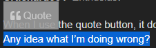

im not a player who ignites the flame of the thread, but i can keep it lit
is there anything you’d like to talk about
reads, maybe?

im not a player who ignites the flame of the thread, but i can keep it lit
is there anything you’d like to talk about
reads, maybe?
This is not a real explanation btw. Reading Alice isn’t a simple task, so I would like you to back your thoughts up with precise points instead of just repeating the same “I read Alice as town from one interaction”.
I personally understand why she is questioning you. Doubling down on your reads without much consideration could easily be viewed as TMI.
Hello Katze, while you’re here we’re talking about Intensify’s reaction to Alice’s FPS on Gaja.
The more I look at it, the more questions I find myself asking.
Talk to me about Intensify like I asked people to do in the above post.
This is just hedge. “He could be town but also not”.
Don’t say that you think Intensify should be looked at – do it instead.
i think theyre more likely to be newbtown than newbscum
their ‘readlist’ is full of nothing but i think as scum they’d be much more hesitant to post such a… lacking post
Counterpoint: Perhaps they felt obliged to post it and appear to be productive.
Because again, it’s a post full of nulls and “I don’t really know”. But I suppose I could see your point.
Next, any strong opinions on SDA?
Also, have you changed your opinions on anyone during the night?
There are a few posts from Intensify that I’d like to question him about.
Posts from Intensify
“Also, isn’t there a scorned class in this? I don’t want to defend Gaja, but I’m just saying, Alice might be scorned.”
Why is he so quick to say he thinks there is a scorned? Does he have information that we don’t know about yet?
“Ok, I’m starting to think Gaja sounds a little scum… he kinda acts like this when he is evil.”
He seems really quick to believe Gaja is scum here even though he entertained the idea of Alice being the scorned. I don’t like this post and I want to question him on this too.
“For me, Ans sounds converted, not starting scum, so maybe Gaja not evil?”
From a town point of view, this seems a big stretch.
“Actually… I want Gaja alive for reasons…”
This is another post which I don’t like. If you’re so sure he’s scum, why not get him lynched?
Kat on the top of everything I just asked you, I need your opinion on the above post.
From those posts alone, I’m putting Intensify in my PoE as the posts I’ve mentioned here seem too scummy for my liking to come from town.
not really
hes one of those players i kind of hope i don’t have to read too closely
i remember thinking him calling me scum a lot of D1 and then not putting me in the scum half of his 3x3 was weird
i don’t think his “nappy is neutral” FPS is AI for him
i mean someone shot pretty far down in my list because of my n1 action
other than that i haven’t done a full reeval yet because im lazy
why didnt he use the quote button 
im not entirely sure how i feel about the post
i think his thoughts aren’t invalid but i don’t agree with some of them
i get why he’d think this
but to my understanding, gaja and intensify are friends, so i’d imagine intensify has a decent way of reading gaja?
When I use the quote button, it doesn’t put the posts in quotes as they’re supposed to.
Any idea what I’m doing wrong?
are you highlighting the text you want to quote before you quote

Because I don’t see any conclusions from you here.
I said so myself, the whole talk about Scorned could simply be theorizing. The reason his posts pinged me wrong was because there was this sudden, flipped switch that went from “Gaja is kinda acting like he plays scum in ToL/ToS” to “Maybe we have a Scorned”.
Your questions are just flat questions. They give me nothing – except for an impression that you “slightly” suspect Intensify, but don’t want to commit to actually suspecting them.
I don’t know how you could infer that from reading his posts. “Really quick to believe Gaja is scum” – I disagree. Intensify has actively said that Gaja might be scum, they didn’t accuse him of being one.
Hard disagree. Elaborate, why would Town PoV not mesh with this.
I’m not even going to talk about this one, because anyone who actually read through Intensify’s ISO knows why they didn’t try to vote Gaja.
i feel like i should reread D2
Yeah, relatable. He is hard to read socially and like I said in my “logs” from last night – this is the one player whom I’d like to try and clear through mech.
He’s… a bit intimidating.
Likewise.
If you are talking about Alice, I believe there are reasons to leave her alone for now.
And if you do something dumb like vig her tonight, I’m going to smack you with a newspaper. Hard.
Well, read what I just wrote.
but
but
hero shots :^)
why do you think i think i should reread D2
i dont remember half of these posts ever happening
To be fair your memory sucks anyway :^)
This seems to be TMI here. His talk about converts when no one else mentioned it looked out of place here.
I perceived Intensify was being indecisive here as to thinking Gaja is evil due to Alice’s “red check”, then he suddenly talks about Alice being the potential Scorned.
I was reading the new chapter of JoJo and now I am going to bed